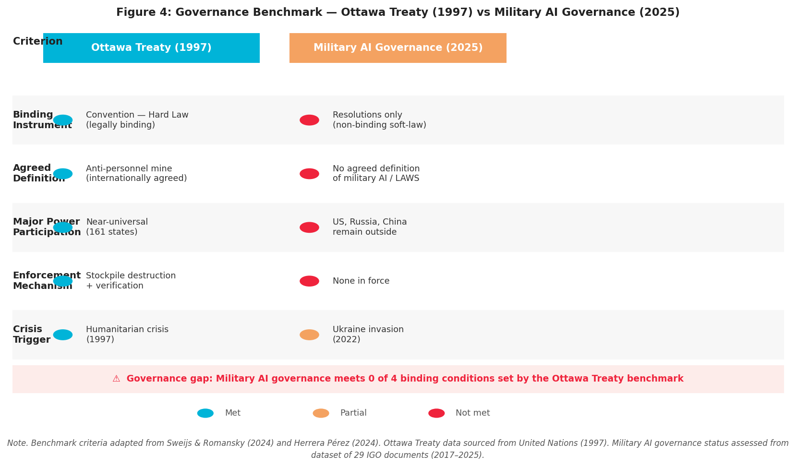

Figure 4: This chart compares the Ottawa Treaty (1997) benchmark against current Military AI governance (2025) across five key criteria for effective international security governance.
Key Findings:

This visualization supports the research finding that while the Russia-Ukraine war constituted a permissive condition (crisis trigger), the productive conditions for transformative governance change were insufficient to meet the Ottawa Treaty benchmark.